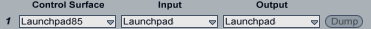

Launchpad95 : Improved Novation Launchpad remote scripts
These scripts are modified version of Ableton Live 9.2 scripts for Novation Launchpad and provide the same functionality but add support for editing the midi clips using a step sequencer, an Instrument Controller and Device Controller and an improved Instrument Mode. It does not require any external tool like Max for Live (M4L) in order to work. This script is just a plain Live Control Surface Python Script.
Comment, feedback and updates : please check this thread on Ableton forum http://forum.ableton.com/viewtopic.php?f=1&t=168495
Willing to make a donation ? paypal to my account hdavid@mail.com.
Installation
Supported Hardware and Software
Launchpad 95 supports Ableton Live 9.2 or greater and Live 10. For Live 8.4: Launchpad85.
Launchpad 95 supports:
- Launchpad
- Launchpad S
- Launchpad Mini
- Launchpad Mini MK2 (RGB)
- Launchpad Mini MK3 (RGB)
- Launchpad X (RGB)
Launchpad PROsee Launchpad Pro95
For Launchpad X and Launchpad Mini MK3, make sure to select "MIDI" Ports and not the "DAW" ports.
Setup
- Download the installation archive : Launchpad95.zip
- Unzip the zip file and copy the folder Launchpad95 into the Ableton Live's "MIDI Remote Scripts" folder. (where is that folder ? look at faq 3.
- After the folder has been copied, plug-in your Launchpad in the computer
and start Ableton Live. Open up the preferences panel and go to "MIDI Sync" panel.
Select Launchpad95 as your control surface and select the launchpad Midi Port MIDI ports like so :
 - Make sure to enable "Track", "Sync" and "Remote" in the midi options below for the MIDI ports used by Launchpad 95.
User Manual
Four modes are added on top of the existing modes. These are Drum Step Sequencer mode to edit midi clips, a medodic step sequencer, and Device Controller mode to edit any parameter of any instrument, effect or device on any track of your arrangement, and finally an Instrument Mode providing a tighter integration with Live.
Note the manual is also available in french as a PDF, thanks to François Lehérissier.
Instrument Controller Mode
Instrument Mode replaces classic User Mode 1. To activate Instrument Controller Mode, press User Mode 1 button (mode button remains amber). Press User Mode 1 button once again, button turns green, activating the Device Controller. Once more the button will turn red, activating the plain old User Mode 1 in case you need it.
The top up/down navigation buttons allow to navigate scenes, while the left/right button allow to navigate tracks. The scene buttons allow you to control the currently selected track and clip, arm, solo, record, play, stop etc (see below).
The matrix of buttons act as a midi keyboard proposing a drum rack layout, and a melodic mode. Melodic mode enable you to select root note, type of mode (major, minor etc), and the octave you play in.
Most of the scene buttons have alternate functions when you hold them long (0.5 sec) :
- undo : a long press will perform a redo !
- stop : a long press will DELETE currently selected clip. No worries this is undoable !
- solo : a long press on solo will enable/disable the selected track.
- arm : holding arm for more than 0.5 seconds will toggle live's metronome. A very long press (2 sec) will alternate between auto arm of track and manual track arming. Colour of the button will reflect the selected mode. This is really useful if you have more than one controller/person interacting with Live.
| prev scene | next scene | prev track | next track | Session mode | user 1 Inst. | user 2 step | mixer mode | |
enter scale edition mode scale |
||||||||
undo. long press to redo undo |
||||||||
| octave up | ||||||||
| octave down | ||||||||
stop selected clip stop |
||||||||
start selected clip start |
||||||||
solo current track solo |
session record overdub |
scale edition mode
To enter scale edition mode press (and keep pressed) the 1st scene button from Instrument mode.
| prev scene | next scene | prev track | next track | Session mode | user 1 Inst. | user 2 step | mixer mode | |
| absolute root | orient. | chromatic guitar | diatonic sequent | diatonic 3rd | diatonic 4th | chromatic | drumrack | enter scale edition mode scale |
| C# | D# | relative scale | F# | G# | A# | 5th left | quick scale mode | undo. long press to redo undo |
| C | D | E | F | G | A | B | 5th right | octave up |
| -2 | -1 | 0 | 1 | 2 | 3 | 4 | 5 | octave down |
| Major | Minor | Dorian | Mixolyd. | Lydian | Phrygian | Locrian | Diminish. | stop selected clip stop |
| Whole-half | Whole Tone | Minor Blues | Minor Penta. | Major Penta. | Harmonic Minor | Melodic Minor | Super Locrian | start selected clip start |
| Bhairav | Hunga. Minor | Minor Gypsy | Hirojoshi | In-Sen | Iwato | Kumoi | Pelog | solo current track solo |
Spanish | IonEol | session record overdub |
- Orient
- this button will change the orientation from vertical to horizontal of the instrument mode.
- Absolute root
- the bottom left left button will always be the root mode of the selected root note.
- Chromatic Guitar
- Scale Mode is pretty much like regular chromatic mode, except the top four rows are all shifted by one semitone. This is so that the bottom 6 rows emulate standard guitar tuning.
- Diatonic sequent
- each row represents an octave, so each first and last button of each row will be the root note.
- Diatonic 3rd
- when moving from one button to the next top, you will move a 3rd degree in the scale. 3rd is very practical to play chords vertically.
- Diatonic 4th
- when moving from one button to the next top, you will move a 4th degree in the scale. 4th is the default mode, also on the push.
- Chromatic
- each button to the left or right of a button will be a semitone lower or higher.
- C, C#, D, D#, E, F, F#, G, G#, A, A#, B
- selects the root note of the scale.
- Relative scale
- changes current selected scale to its relative scale. IE. from C major to C minor and viceversa.
- 5th left
- changes current selected scale to the prior scale in the circle of fifths (a 5th lower).
- 5th right
- changes current selected scale to the next scale in the circle of fifths (a 5th higher).
- Quick scale mode
- substitutes the top 2 rows of instrument mode for the quick scale modes (see below).
- -2, -1, 0, 1, 2, 3, 4, 5
- changes the octave of the instrument mode.
quick scale modes
if quick scale is activated (last button on the right on the 2nd row in scale edit mode), the two first rows of the launchpad allow you to quickly change the scale.
this shows the two first rows of the launchpad. the last button of the first row changes between root note selection and mode selection.
root note
in this mode you can select the root note of your scale. you can also quickly alternate between minor and major by pressing the button again
| C# | D# | relative scale | F# | G# | A# | 5th left | scale / mode toggle | enter scale edition mode scale |
| C | D | E | F | G | A | B | 5th right | undo. long press to redo undo |
quick scale modes: modus
in this mode you can select the mode of your scale.
| Major | Minor | Dorian | Mixolyd. | Lydian | Phrygian | Locrian | scale / mode toggle | enter scale edition mode scale |
| Diminish. | Minor Blues | Harmonic Minor | Melodic Minor | Super Locrian | Hunga. Minor | Minor Gypsy | Spanish | undo. long press to redo undo |
note repeat
in this mode you can activate and configure note repeat.
| Swing +2.5% | Swing -2.5% | Swing 0% | Swing 25% | Swing 50% | Swing 75% | Repeat On/Off | Scale / mode toggle | enter scale edition mode scale |
| 1/4 | 1/4T | 1/8 | 1/8T | 1/16 | 1/16T | 1/32 | 1/32T | undo. long press to redo undo |
Drum Step Sequencer Mode
To activate the Drum Step Sequencer, select a midi clip in the clip view. Then press User Mode 2 button once, activating the step sequencer (in normal mode). Press user mode 2 button once more opens the Melodic step sequencer
this sequencer has two sub modes detailed below. combined and multinotes. (note there is a second step sequencer, melodic step sequencer detailed further down).
A playback/metronome indicator is scrolling thru the grid in amber to indicate the playing position of the clip as the clip is playing. This is just an overlay, it does not affect the functionality of the buttons.
Here are the colour codes used :
- Normal notes are shown in Green, intensity depending on their velocity.
- Muted notes are displayed in red.
- Notes being currently played are flashing in red.
- Notes being played and being outside of the currently displaying midi clip block will also flash in red.
Some other information is displayed, using orange colour :
- Note markers help to better visualise what row correspond to which note:
- root note of the selected are marked with three orange left buttons lit up.
- other notes of the scale are marked with one orange button lit on the left-most row.
- while scrolling left and right along the clip, a vertical bar will display you where you are in the clip
A summary of functions assigned to the buttons is shown in the table below. hover your mouse above a button to get detailed descriptions.
StepSeq by default works in combined mode. pressing the 4th scene button toggles between combined mode and multi note mode. Multinote mode works in similarly to the the previous step in launchpad85, while combined mode offers mode close to the way Push StepSeq behaves.
Combined Mode
The bottom left area let you select the note currently being edited on the top note editor.
The bottom right area allows you the select the currently clip part currently being displayed (single button press) and edited (double press or one button after the other).
Some buttons have combined function :
- Lock (2nd scene button):
- press long to switch between clip lock and play clip on locked track mode
- yellow : track lock mode. step sequencer is locked to current track and will follow playing clip on this track
- red : step sequencer is locked to current clip.
- quantize (3rd scene button):
- press long duplicate clip in a new clip
- Mute (last scene button):
- hold mute button and click on a note to mute it
- hold mute button and press on a note in the bottom left quadrant to mute it
- hold mute button and select a loop range in the loop selector to delete it
- velocity (7th scene button):
- hold velocity button and click on a note to change its velocity
- hold velocity button and click on a note to change in the note selector to ear a preview of the sound
- hold velocity button and select a loop range in the loop selector to extend the original clip content to the newly selected length
- velocity (7th scene button) and mute
- hold velocity button and mute button at the same time and select a loop range in the loop selector in order to mute this time selection
| prev scene | next scene | prev track | next track | Session mode | user 1 device | cycle thru StepSequencers and User Mode 2 user 2 step |
mixer mode | |
Display Scale Selection Overlay scale |
||||||||
lock step seq to current clip (very useful !). long press to lock on current track only lock |
||||||||
cycle thru available quantisations quant. |
||||||||
switches between combined and multinote modes modes |
||||||||
scroll up (notes) up |
||||||||
scroll down (notes) down |
||||||||
cycle thru velocities and velocity shift notes velocity |
hold and press a note in the matrix to (un)mute it. mutehold and press a note in the note selector to mute a lane hold+nav keys to scroll up/down one octave |
Multinote Mode
To activate this mode, press the 4th scene button while in Combined Mode (pressing the same button again will take you back to Combined Mode).
This mode uses the grid as a 8*8 matrix. one midi note per row. It follows the scale mode selected. Note that the left and right arrows are used to navigate left and right in the clip.
select prev scene prev scene |
select next scene next scene |
select prev clip page prevpage |
select next clip page nextpage |
Session mode | user 1 device | cycle thru StepSequencers and User Mode 2 user 2 step |
mixer mode | |
Display Scale Selection Overlay scale |
||||||||
lock step seq to current clip (very useful !) lock |
||||||||
cycle thru available quantisations quant. |
||||||||
switches between combined and multinote modes modes |
||||||||
scroll up (notes) up |
||||||||
scroll down (notes) down |
||||||||
cycle thru velocities and velocity shift notes velocity |
hold and press a note in the matrix to (un)mute it. mutehold and press a note in the note selector to mute a lane hold+nav keys to scroll up/down one octave |
Melodic StepSequencer
To activate this mode, press user mode 2 button until it turns green.
This mode behave more how a hardware stepsequencer works. it uses the grid as a 7*8 matrix to edit note pitch, velocity, length and octave. one function per page. of course notes pitches follow the selected scale !
The last row of the matrix acts as a page selector and work in the similar fashion to the combined step stequencer loop selector.
double press on the last scene button toggles between monophonic and polyphonic modes.
select prev scene prev scene |
select next scene next scene |
prev track | next track | Session mode | user 1 device | cycle thru StepSequencers and User Moder 2 user 2 step |
mixer mode | |
Display Scale Selection Overlay scale |
||||||||
lock step seq to current clip (very useful !) lock |
||||||||
cycle thru available quantisations quant. |
||||||||
randomise the selected function (pitch,length,velocity,octave) random ! |
||||||||
| length | ||||||||
| octave | ||||||||
| velocity | notes |
Device Controller Mode
Navigation
Navigation among tracks and devices is done using the top left navigation buttons.
Editing parameters
You can edit eight parameters of the selected device on the selected track at once. One parameter per column. You can navigate banks of parameters using scene buttons 2 and 3. depending on the type of parameter edited launchpad will display then in different ways.
- On/Off parameters
- using the color code red. only one button will be used to change the parameter
- Parameter with list of values
- for the parameters that have a list of values, the colour code it amber, for example a Synth wave form selector (square, sine, triangle). If the parameter has less that 8 values, they will be directly acessible one by one. if more values are available, you can scroll thru the values. the closer the button to the center the more precise. the closer the top or bottom of the launchpad, the greater the value change will be at each press.
- Parameter continuous values
- for the parameters that have a continuous value, like Volume, Panning, etc, the colour code is green. by default Launchpad displays the parameter like a volume slider on the mixer mode. if you activate the precision slider mode (by pressing scene 4 button), the sliders will then work in the similar way to the case of parameter with list of values.
Locking to devices
You can save up to 4 devices using the 4 bottom scene button. if not device is saved, the button will be pink. To save a device, first select the desired device, then press one of the 4 last scene buttons for more than half a second. the button turn red ! your device is saved. You can recall it at any time by a short press on the scene button. To unsave a device, apply a long press again on the button.
| Device+ | Device- | Track- | Track+ | Session mode | user 1 device | cycle thru StepSequencers and User Moder 2 user 2 step |
mixer mode | |
| On/Off | ||||||||
| Bank+ | ||||||||
| Bank- | ||||||||
| Precision | ||||||||
| Lock1 | ||||||||
| Lock2 | ||||||||
| Lock3 | Lock4 |
Session Mode
| scenes up | scenes down | tracks left | tracks right | Session mode | user 1 Inst. | user 2 step | mixer mode | |
| scene | ||||||||
| scene | ||||||||
| scene | ||||||||
| scene | ||||||||
| scene | ||||||||
| scene | ||||||||
| scene | ||||||||
| scene |
User1 Mode
| Session mode | user 1 Inst. | user 2 step | mixer mode | |||||
User2 Mode
| Session mode | user 1 Inst. | user 2 step | mixer mode | |||||
Mixer Mode
Volume
If you wish to override default mapping for volume slider buttons you can set it via VOLUME_LEVELS setting in "Settings.py" file.
| prev scene | next scene | prev track | next track | Session mode | user 1 Inst. | user 2 step | mixer mode | |
| Volume | ||||||||
| Pan | ||||||||
| Send A | ||||||||
| Send B | ||||||||
| Stop All | ||||||||
| Active all | ||||||||
| Unsolo ll | ||||||||
| Unarm All |
Source
F.A.Q.
- 1. Which Launchpad flavours are supported
-
Launchpad, Launchpad S, Mini, Mini MK2 and MK2 (RGB), Mini MK3, and Launchpad X are supported
Basically all Launchpad but the pro are supported by this script.
Launchpad Pro is supported by Launchpad Pro95 - 2. Which Ableton live versions are supported
-
Launchpad 95 works with Live 9.2+, and Live10 32 bit or 64 bit, Mac or Windows, suite or intro or standard.
Basically with every combination you may think of as long at it is live 9.2 or greater.
Of course Ableton from time to time change their Python Live without notification and therefore Launchpad95 might stop working, but i am trying to keep up and the changes.
if Launchpad95 stopped worked after an update, make sure to download the last version from this site.
- 3. Where should I put the script ?
-
On pc/windows 7 : inside "C:\ProgramData\Ableton\Live 9 Suite\Resources\MIDI Remote Scripts"
On a mac right-click the Live application you use (there might more than one installed!) and select "view package content", then browse to "App-Resources/MIDI Remote Scripts".
Inside this "MIDI Remote Scripts" folder, you should have a folder called "Launchpad95". inside this folder you should have a bunch of .py files, and a for each of them a .pyc file. (.pyc files are compiled version of the .py that live compiles as you start it.)
Sometimes a picture is worth 1000 words. Take a look at these screenshots.
- On a mac it look like this.
- on a pc like that
- 4. It does not work, I installed everything, but the launchpad does not light up when I select Launchpad95 in the dropdown in the preferences. what is wrong ?
-
It is hard to guess what you did wrong. You must have installed not the right way somehow.
Try to install it from scratch again, download from this site, extract install, restart live.
Among the list of things you can try to do :
- - check the you installed at the right place. (check question #3 !)
- - Pay attention to the folder name AND its full path. (again see screenshots in above in question #3)
- - how many versions of live do you have installed ?
- - are you running live 9.2 or greater ? for live 8 please use launchpad85. For live 9.0, upgrade to live 9.2+.
- 5. It does not work, I installed everything, but Launchpad95 does not appears the dropdown in the preferences. what is wrong ?
-
See question 4.
- 6. Note Feedback is not working in Instrument Controller
-
Make sure you activated the launchapd midi in/out as "track" in Live midi preferences.
- 7. good work ! I wish to donate ! is there a way to donate somehow ?
-
Sure ! Your donations allowed me to pay for the Launchpad Pro that is now supported ! thank you for this.
paypal to my account hdavid@mail.com.
{kind=link}
{kind=link}
Known Issues
- in live 9, moving notes in clip editor while stepseq is open duplicates notes.
- Launchpad85 for live 8 is now longer maintained/improved.
History
- 2020-03-23 - enable RGb session mode on LPX and LPmini MK3
- 2020-01-12 - user customisable mixer volume slider values
- 2019-11-02 - support for Launchpad Mini MK3 and Launchpad X
- 2019-08-26 - documentation fixes. duplicate clip now does not fire it.
- 2017-04-01 - note repeater ! (sub mode of quick scale mode) contribution from Pablo Torres.
- 2016-04-09 - small fixes for mk2. skin improvements
- 2016-03-28 - Launchpad MK2 RGB autodetect. better skinning. merging device mode from launchpad pro95
- 2016-03-02 - Launchpad MK2 RGB support.
- 2015-12-31 - code cleanup, partial and untested support for MK2 RGB, skinning
- 2015-04-03
- save scale in clip in stepseq and instrument mode (off by default, check Settings.py)
- customisable user modes (in Settings.py)
- clean up TrackController - 2015-02-24 - minor fix for live 9.2 beta 1
- 2015-02-13 - minor fixes
- 2015-01-20 - change: Option to add clip stop buttons moved to Settings.py
- 2015-01-14 - add: added option to add stop buttons at bottom of session (MainSelectorComponent.py:39)
- 2015-01-14 - fix: minor cleanup and bugfixes !
- 2014-12-06 - fix: minor cleanup and bugfixes !
- 2014-10-03 - change: revamped device controller !
- 2014-09-16 - change: minor fixes in melodic stepseq.
- 2014-07-14 - change: double pressing mute button in stepseq holds shift.
- 2014-06-11 - fix: compatibility fix for live 9.1.3b8. should be backward compatible with 9.1.2 fix : minor fixes
- 2014-04-30 - add: m4l OSD/helper. fix : minor fixes in step seq. fix : uniformise scale edition and quick scale
- 2014-03-28 - fix: bugs while in drumrack mode. fix session scene not working while exiting user mode 1. add: relative scale to quick scales, added circle of fifth navigation
- 2014-03-12 - fix: compatibility with max4live in user mode 2. fix midi channels for some modes. add: duplicate clip in step seq (hold lock button for 0.5sec).
- 2014-02-27 - major update !
- new melodic step seq !
- preview of notes in combined step seq (hold 7th scene button and play on the note selector in the lower left corner of the matrix)
- quick scale in instrument mode to quickly change scale while playing
- compatibility with live 9.1.1 and 9.1.2 or above.
- various bugs fixes and improvements. - 2014-01-06 - add: diatonic 3rd and sequent and guitar chromatic modes. fix: implicit arm. change: updated documentation
- 2014-01-06 - fix: track locking in step seq
- 2013-12-16 - fix: led feedback in instrument mode !
- 2013-12-11 - add: improve integration with launchpad95Colour.
- 2013-12-07 - change: change scale colour. minor bugfix.
- 2013-11-18 - fix: improve stepseq lock to a track mode.
- 2013-11-18 - add: long press on the stepseq lock button to lock to a track.
- 2013-11-11 - add: combos to mute, delete and extend clip content in step sequencer
- 2013-10-28 - fix: small bug fixes
- 2013-10-23 - add: add option to compress channels used by launchpad95 to free up channels for other devices
- 2013-10-18 - fix: show device panel while activating device controller. fix led blinking when entering stepseq. properly turn off scene buttons in user modes. add: use clip color palette to blink white clips
- 2013-10-09 - fix: Fix Clip linking in StepSeq. small fixes.
- 2013-09-27 - fix: matrix not fully updated while entering multinote stepseq.
- 2013-09-22 - fix: compatibility with live 9.1 beta. Fix Clip linking in StepSeq.
- 2013-09-02 - fix: fix a few bugs in metronome and clip callback in stepseq
- 2013-08-13 - add: complete rework of the stepseq
- 2013-05-28 - fix note highlighting in StepSeq in hires. various minor fixes in stepseq. Fix UserMode2 (was sending midi notes)
- 2013-05-25 - fix paging StepSeq, add support for selected DrumPad at the highest resolution. fix note feedback when entering instrument mode. add: very long press Arm in instrument mode to toggle implicit track arm
- 2013-05-09 - fix for live 9.0.4: replace overdub by session_record in TrackController. overdub in Python API started to behave strange from 9.0.4.
- 2013-05-04 - add: long press on solo to mute/unmute track in instrument mode. fix: disable implicit arm while leaving instrument mode.
- 2013-04-13 - change : changed some buttons in instrument mode. support for implicit arm.
- 2013-04-13 - add : support for Instrument mode
- 2013-03-13 - fix : fix loop length dec button
- 2013-03-05 - add : Launchpad95 to support Live 9
- 2012-10-21 - change : while extending midi clip, clone existing notes in the newly created portion
- 2012-02-02 - change : fixed midi channels for step sequencer and device controller to avoid conflicts
- 2012-01-22 - add: up/down per octave paging in step sequencer (press and hold mute and press navigation keys) fix:scrolling boundaries
- 2012-01-21 - add: Scale mode. fix: better scrolling in fold and scale mode. change: merged mute shift and mute. changed: merge velocity and velocity shift.
- 2012-01-03 - add: easier to configure metronome and note markers in step sequencer. add: adapted LaunchpadColour (Launchpad85Colour) to this script, for color blind people
- 2012-01-02 - bug fix: improve button response time in step sequencer (was causing problem while pressing multiple buttons at once)
- 2011-12-31 - bug fix: loops longer than 8 blocks were not supported. add : scale marked in step sequencer marking C (3 amber blocks) and A (one amber block)
- 2011-12-29 - bug fix: some buttons not responding correctly in user mode 1
- 2011-12-26 - Improved live integration (shows Device chain/clip editor). fixed crash while loading Live Set
- 2011-12-23 - support for MaxForLive. addition of lock mode in step sequencer. bug fixes. renamed from Launchpad75 to Launchpad85.
- 2011-10-05 - addition mute lane in step sequencer
- 2011-10-01 - addition of device controller
- 2011-08-20 - bug fixes
- 2011-07-22 - first public version
- 2011-05 - working on an initial version
Contact
feel free to contact me for any suggestions and bug reports.
_